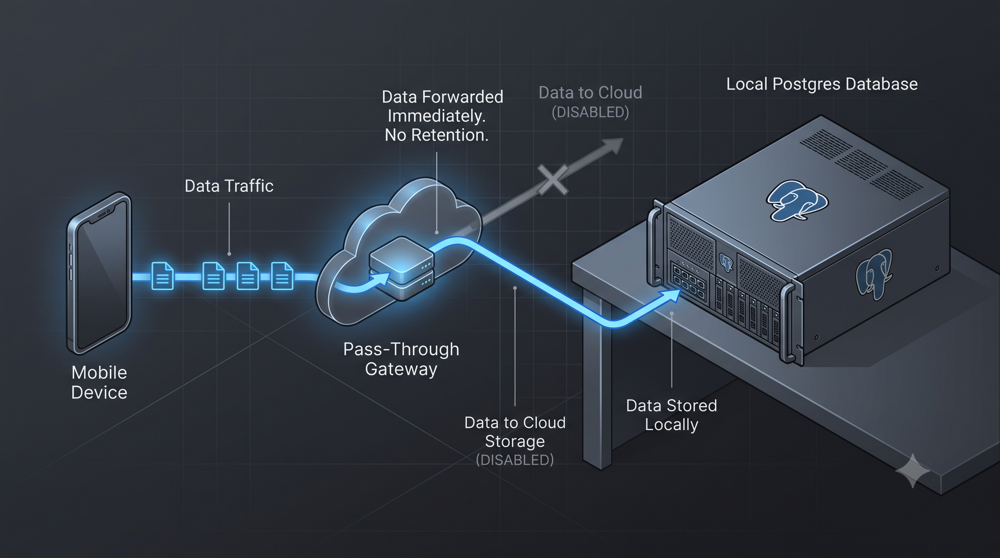

Série: Do Silício ao Chão de Fábrica — Episódio 03
Economia Real vs. Economia da Ilusão

Tempo de leitura: 6 minutos
Há uma linha divisória perfeita, porém frequentemente invisível, entre a economia que constrói e a economia que parasita. No ecossistema tecnológico contemporâneo, onde bilhões de dólares evaporam em promessas abstratas, compreender essa diferença é fundamental para quem deseja colocar sua energia profissional e seu talento em algo que faça sentido estratégico e moral.
De um lado, temos o que chamamos de Economia Real. É o mundo palpável, focado na remoção de atritos da vida cotidiana. As fintechs de vanguarda que quebraram o monopólio abusivo dos "grandes bancões" e democratizaram o acesso a serviços financeiros básicos são um exemplo disso. O mesmo vale para a engenharia de logística: o ato físico de carregar, transportar e entregar um produto dimensional cruzando estradas complexas para fazê-lo chegar às mãos de quem precisa. Há um progresso tangível aqui; você consegue ver o resultado do seu código rodando nas ruas, nas casas das famílias e nas engrenagens industriais.
Do outro lado do espectro, opera a Economia da Ilusão e da Destruição. São os pilares que tentam perpetuar a velha hipocrisia de geração de valor fictício: a especulação financeira pura (onde dinheiro gira em salas fechadas apenas para gerar mais dinheiro, sem gerar um único produto útil ou serviço de benefício social) e a máquina da indústria armamentista (que gera lucro massivo no topo destruindo a base social). O profissional de tecnologia maduro, que já superou a fase de aceitar qualquer emprego apenas para pagar as contas imediatas, tem o dever de calibrar sua bússola ética. Escolher guiar um navio mercante útil, que transporta valor de um porto real a outro, em vez de se trancar na cabine de um navio pirata de especulação ou de guerra, é o que distingue o verdadeiro engenheiro de um mero trabalhador braçal da máquina.
A Solução de Engenharia: O Padrão Gateway Pass-Through
Como aplicar a soberania tecnológica na Economia Real reduzindo em até 80% os custos de infraestrutura de nuvem? A resposta está no padrão Gateway Pass-Through. Em vez de persistir terabytes de dados operacionais e imagens fiscais pesadas em bancos de dados de nuvem de terceiros (o que gera cobranças abusivas e imprevisíveis), o backend em nuvem (escrito no leve Quarkus 3) atua estritamente como um roteador dinâmico de tráfego. Ele recebe as requisições dos dispositivos móveis de pista e as repassa de forma criptografada para um banco PostgreSQL hospedado em infraestrutura privada dedicada (como uma nuvem privada corporativa ou servidor local seguro), descartando-as da memória volátil da nuvem pública imediatamente.

Esquema de roteamento de dados sem armazenamento persistente em servidores de nuvem.
A Lente do Negócio: Soberania e Redução de Custos de Nuvem
Para o líder de negócios, delegar toda a custódia de dados transacionais cruciais da empresa para servidores de nuvem de terceiros não é apenas um risco operacional de vazamento; é um gargalo financeiro de escala. Conforme o volume de transações cresce, os custos de armazenamento e consulta em nuvem explodem na mesma proporção. Ao projetar uma arquitetura baseada em um gateway leve na nuvem que redireciona as transações para um servidor privado dedicado em ambiente local ou nuvem privada sob controle total da sua empresa, ela ganha Soberania de Dados e mantém o custo operacional de infraestrutura estável e previsível, imune às oscilações do dólar.
O código mais elegante não tem valor se a sua finalidade é apenas inflar planilhas especulativas ou alimentar monopólios predatórios.
As soluções que você desenvolve hoje ajudam a remover atritos da vida de pessoas de verdade ou apenas giram dinheiro na nuvem?
Lousa de Conceitos e Dicionário de Termos
- Economia Real: Setor econômico focado na produção física de bens, serviços essenciais e na remoção de gargalos operacionais da sociedade.
- Fintech: Empresas de base tecnológica que atuam no mercado financeiro, reduzindo o custo transacional e desintermediando o acesso ao dinheiro.
- Gateway Pass-Through: Padrão de integração onde o servidor de nuvem pública funciona apenas como roteador dinâmico de tráfego, direcionando requisições sem armazenar ou persistir dados permanentemente em seus discos.
- Parasitismo Econômico: Operações de captação ou rotação de capital que extraem valor do ecossistema produtivo sem gerar ativos, empregos reais ou melhorias físicas.
- PostgreSQL: Sistema de gerenciamento de banco de dados relacional de código aberto extremamente robusto, seguro e extensível, muito utilizado em ambientes corporativos de missão crítica.
- Quarkus 3: Framework Java nativo do Kubernetes projetado para nuvem e microsserviços, com baixíssimo consumo de memória e tempo de inicialização extremamente rápido.
- Soberania de Dados: Capacidade e prerrogativa de uma organização de controlar e armazenar suas bases de dados em infraestruturas privadas dedicadas sob sua custódia exclusiva, mitigando o aprisionamento de nuvens externas.
— Fim do Episódio 3. Retorne ao Episódio 2 ou continue no Episódio 4: A Ditadura do Silício. Índice da série em: Chamada e Índice.
Nota do Autor: Terceiro episódio da série "Do Silício ao Chão de Fábrica", abordando o alinhamento ético e técnico da carreira sênior na engenharia de sistemas.